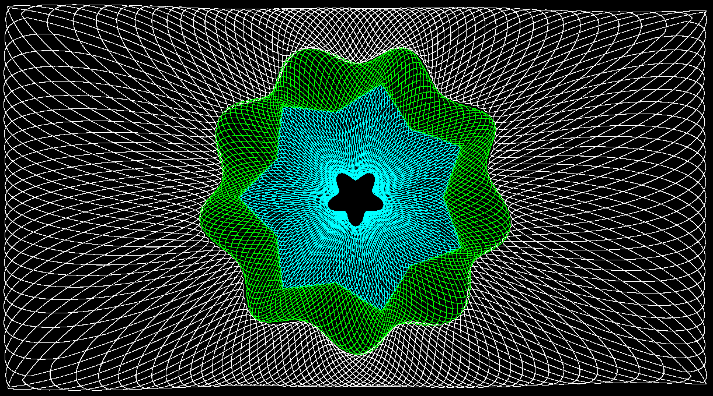
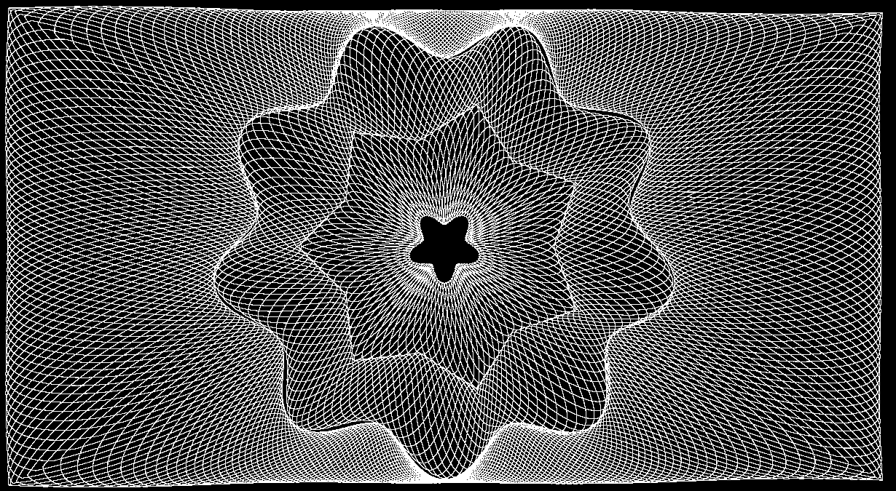

Playing Around With Guilloche Patterns
To fix it, we must essentially write the envelope functions as parametric funtions of t, with t interpreted as (some scaling of) an angle.

See guilloche17.pde, specifically angrecx() and angrecy() functions.

See guilloche18.pde